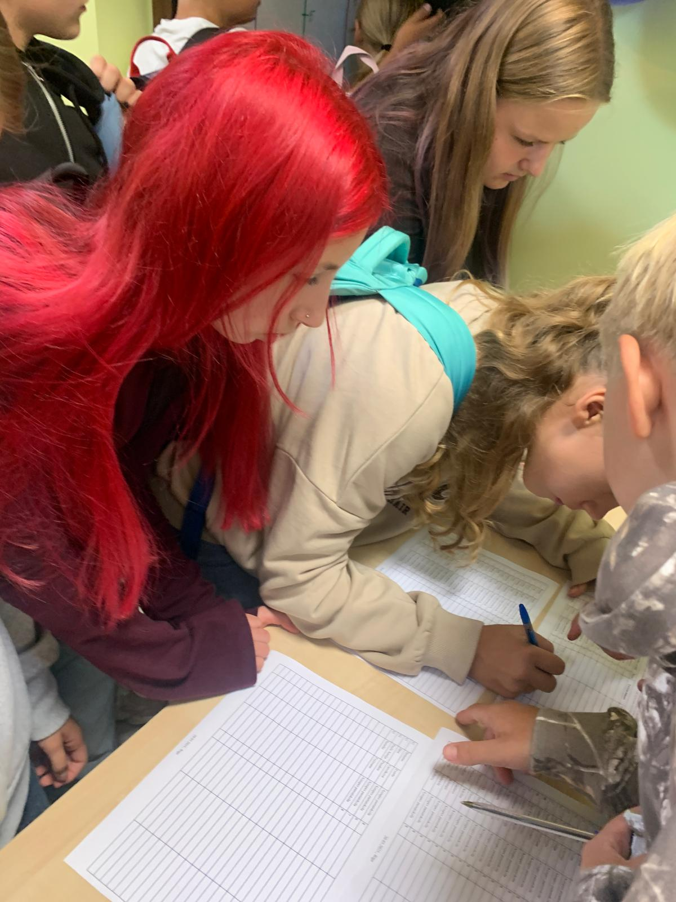
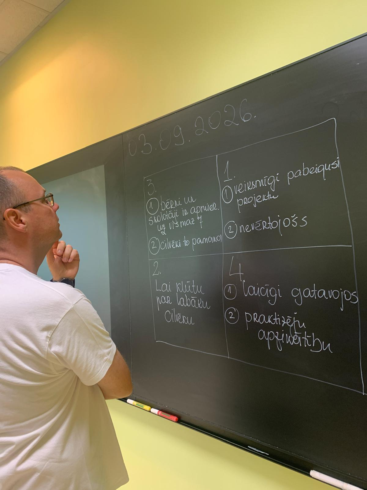
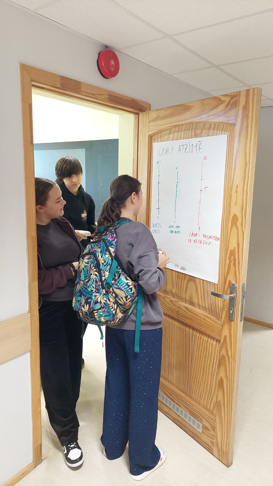
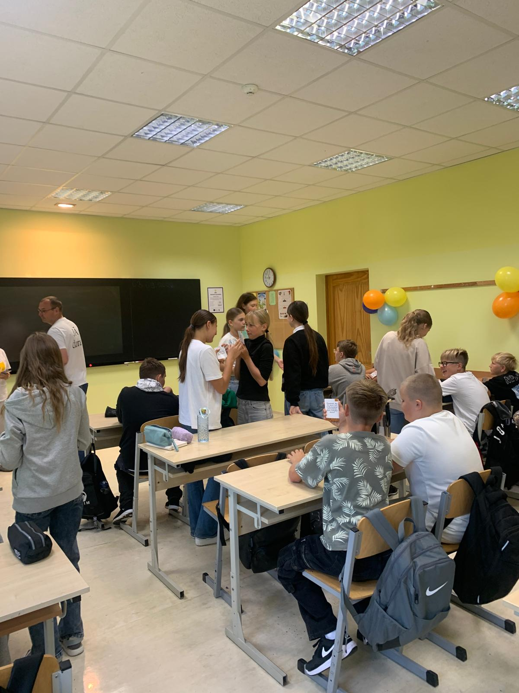
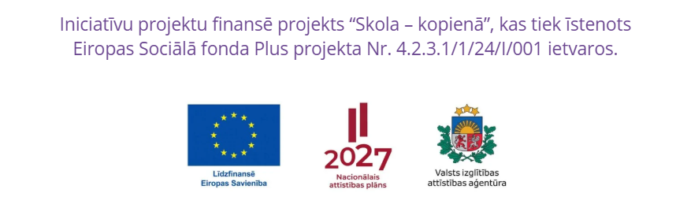

← Atpakaļ uz projektu „JĀdara kopā”
JĀdara kopā · Projekta aktualitātes
Mūsu skolā ir veiksmīgi aizvadīta pirmā izaugsmes nodarbība 6., 7. un 8. klašu skolēniem, uzsākot jauno iniciatīvu projektu „JĀdara kopā”.
Šī iedvesmojošā iniciatīva skolas vidē tiks īstenota līdz pat sadarbībā ar nodibinājumu „Junior Achievement Latvijas Ekonomikas skolotāju klubs”. Projekta galvenais mērķis ir veicināt mūsu skolēnu personīgo izaugsmi, sadarbības prasmes un radošo domāšanu, vienlaikus stiprinot izglītības iestādes un vietējās kopienas savstarpējo saiti.
Pirmā tikšanās izvērtās par aizraujošu un pārdomas raisošu piedzīvojumu gan pašiem audzēkņiem, gan viņu skolotājām un nodarbību vadītājiem. Šīs praktiskās nodarbības vadīšanai tika piesaistīti profesionāli koučinga speciālisti, kuri palīdzēja jauniešiem mācīties sadarboties, veidot cieņpilnu dialogu un attīstīt radošo domāšanu.
Kā atzīst nodarbību organizatori, sarunāties un domāt radoši reizēm nemaz nav tik vienkārši, tomēr, pārvarot pirmos izaicinājumus, kopīgais darbs sniedza patiesu prieku un gandarījumu. Šādas praktiskās aktivitātes stiprina ne tikai skolēnu pašizaugsmi, bet arī lieliski saliedē skolas kopienu.
Izvēlies foto, lai skatītu to pilnā izmērā.




Iniciatīvu projektu finansē projekts „Skola – kopienā”, kas tiek īstenots Eiropas Sociālā fonda Plus projekta Nr. 4.2.3.1/1/24/I/001 ietvaros.
